Gallery — Plates
Rendered works.
Three collections: fractals computed in Python, architectural vector plates, and field photographs — 17 works and counting.
Fractal renders

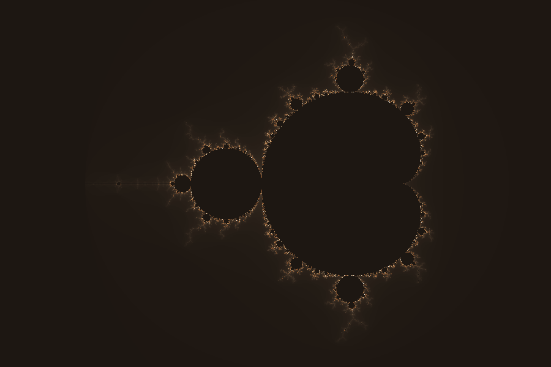

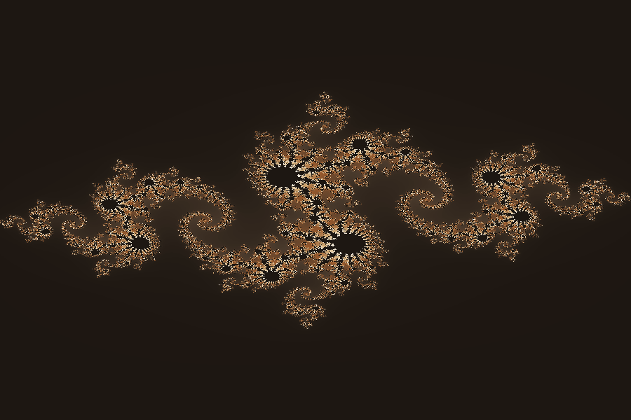

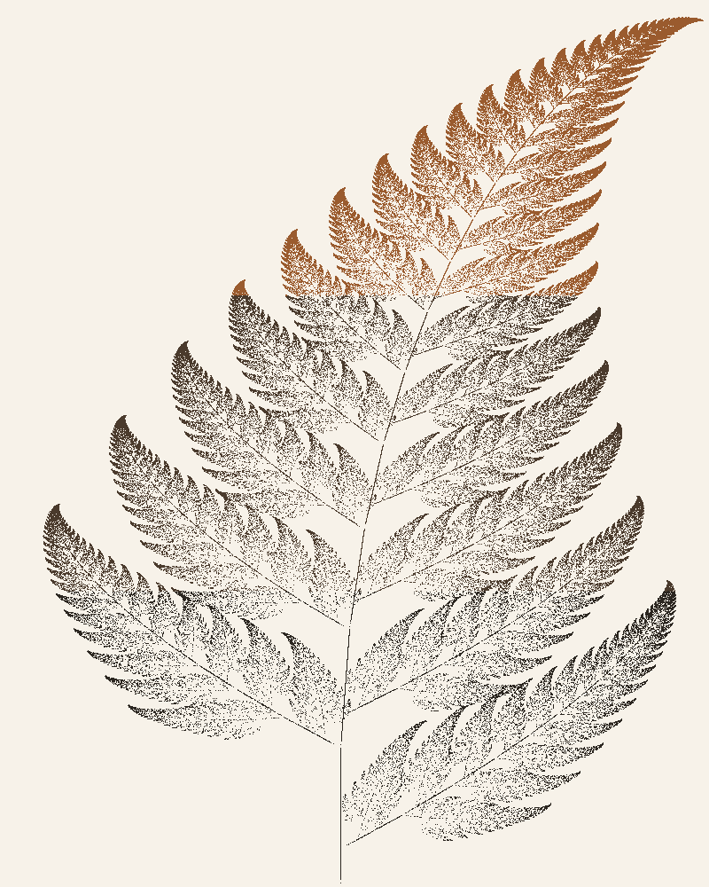

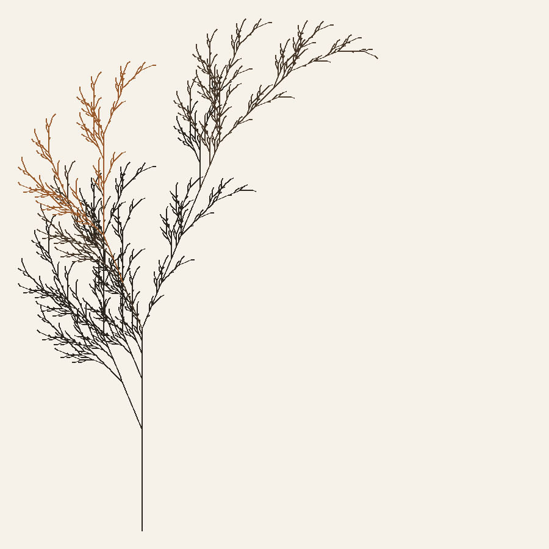
Architectural plates

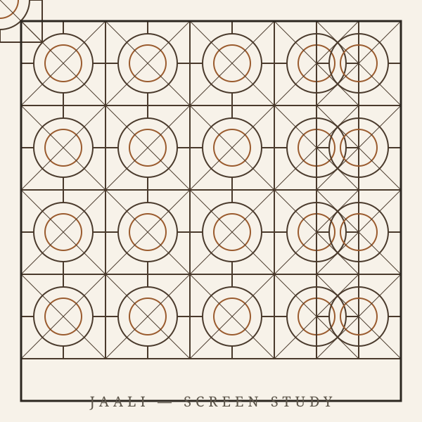

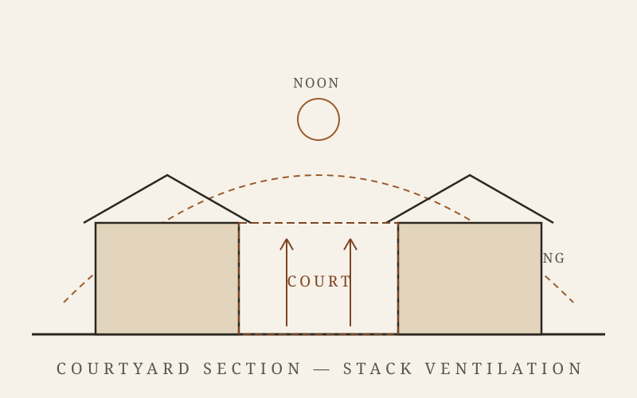

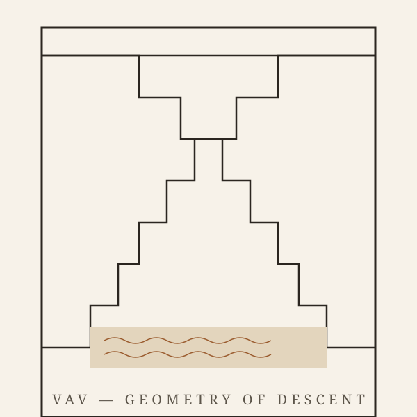
Photographs
Field references from Wikimedia Commons — classical and contemporary
India. Full credits in assets/photo/CREDITS.md.


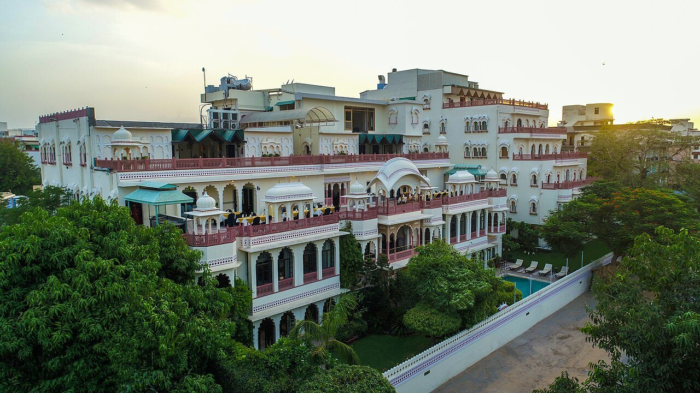

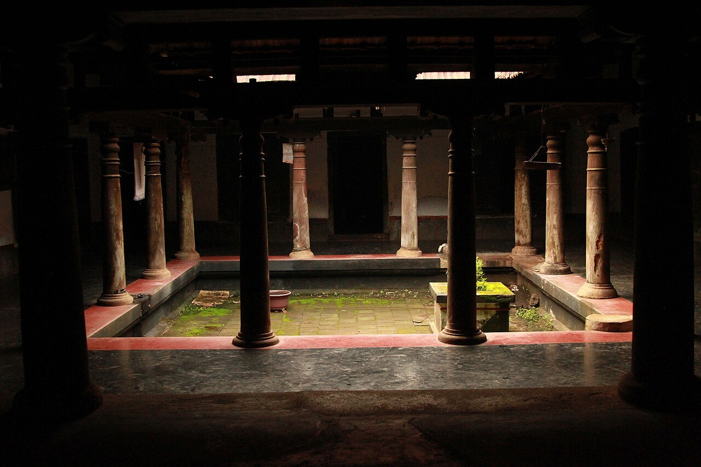


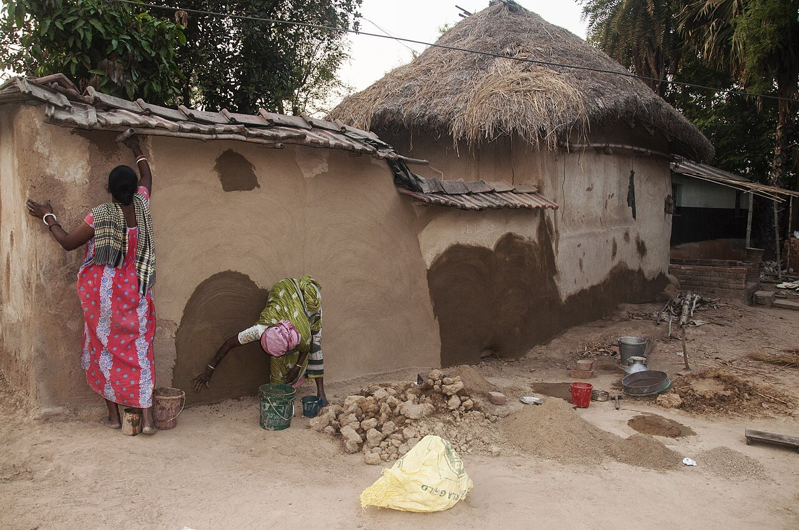

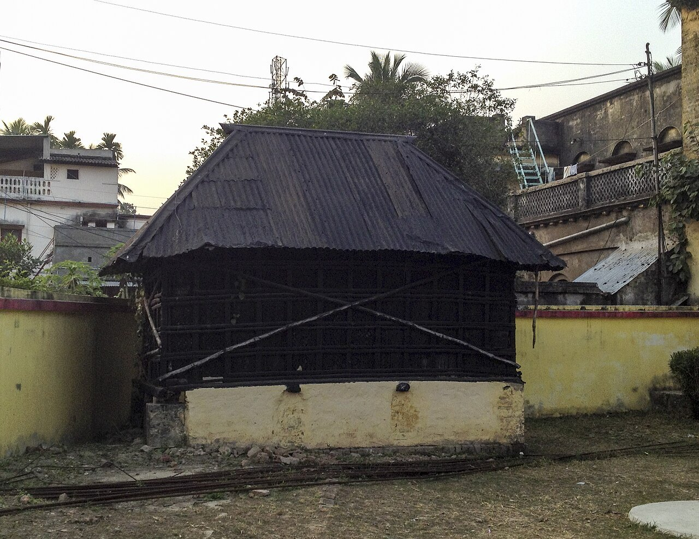